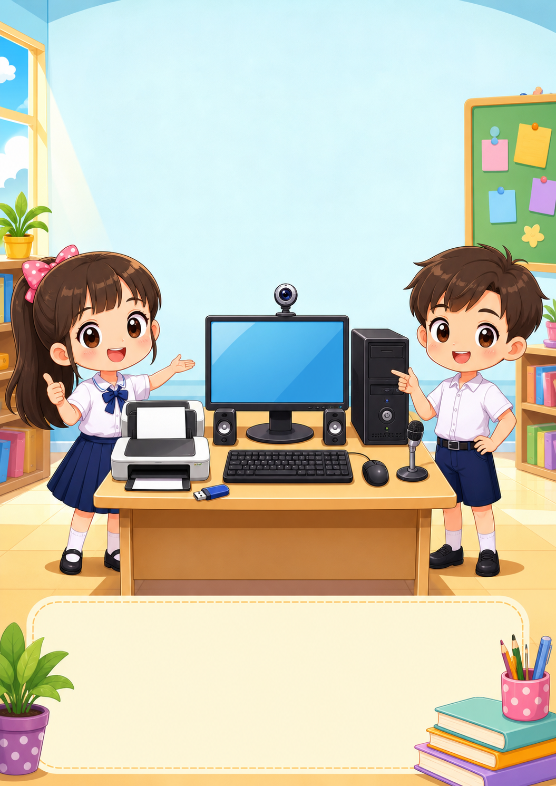
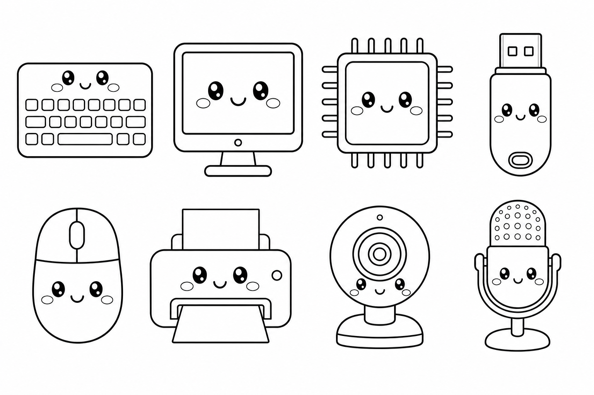

เฉลยครู

จำง่าย: เรา ป้อนข้อมูล → CPU คิด → อุปกรณ์ บอกผล → แล้วจึง เก็บ ไว้ใช้
1. รับข้อมูล (Input)
ส่งข้อมูลเข้าสู่คอมพิวเตอร์ เช่น แป้นพิมพ์ เมาส์ ไมโครโฟน และเว็บแคม
2. ประมวลผล (Process)
CPU คำนวณ เปรียบเทียบ และควบคุมการทำงาน อยู่ภายในหน่วยระบบ
3. แสดงผล (Output)
นำผลลัพธ์มาให้เราเห็นหรือได้ยิน เช่น จอภาพ เครื่องพิมพ์ และลำโพง
4. จัดเก็บ (Storage)
เก็บไฟล์ไว้ใช้ภายหลัง เช่น แฟลชไดรฟ์ ฮาร์ดดิสก์ และหน่วยความจำ
CPU เป็นหน่วยประมวลผลที่อยู่ภายในหน่วยระบบ ทำหน้าที่คำนวณและควบคุมการทำงาน
เฉลยครู
ชื่อ-นามสกุล ชั้น เลขที่
คำชี้แจง: ดูหมายเลขในภาพ แล้วเติมชื่ออุปกรณ์จากคลังคำให้ถูกต้อง
จอภาพ · เมาส์ · แป้นพิมพ์ · หน่วยระบบ · ลำโพง · เครื่องพิมพ์ · ไมโครโฟน · เว็บแคม
1จอภาพ
2หน่วยระบบ
3แป้นพิมพ์
4เมาส์
5ลำโพง
6เครื่องพิมพ์
7ไมโครโฟน
8เว็บแคม
ภารกิจระบายสี1) ระบายอุปกรณ์รับข้อมูลสีฟ้า 2) ระบายอุปกรณ์แสดงผลสีเขียว 3) ระบายหน่วยระบบสีส้ม
○ วงกลมอุปกรณ์ที่ใช้พิมพ์ข้อความ☆ ใส่ดาวที่อุปกรณ์ใช้ฟังเสียง
เฉลยครู
ชื่อ-นามสกุล ชั้น เลขที่

1
ลากเส้นจับคู่กับหน้าที่
ก. แป้นพิมพ์
ข. จอภาพ
ค. CPU
ง. แฟลชไดรฟ์
เก็บไฟล์เพื่อนำไปใช้ภายหลัง (ง)
พิมพ์ตัวอักษรและตัวเลข (ก)
แสดงภาพและข้อความ (ข)
ประมวลผลและควบคุมการทำงาน (ค)
2
เติมคำในสถานการณ์
1. ต้องการพิมพ์รายงาน ใช้ แป้นพิมพ์
2. ต้องการฟังเพลง ใช้ ลำโพง
3. ต้องการสนทนาออนไลน์ให้เพื่อนเห็นหน้า ใช้ เว็บแคม
4. ต้องการนำไฟล์ไปโรงเรียน ใช้ แฟลชไดรฟ์
3
จำแนกอุปกรณ์
เขียนชื่ออุปกรณ์อย่างน้อยกลุ่มละ 1 ชนิด
รับข้อมูล (Input)
แป้นพิมพ์
เมาส์
แสดงผล (Output)
จอภาพ
ลำโพง
จัดเก็บ (Storage)
แฟลชไดรฟ์
4
เลือกอุปกรณ์ให้เหมาะกับงาน
เรียนออนไลน์และพูดคุยกับครู
□ จอภาพ □ เว็บแคม □ ไมโครโฟน □ เครื่องพิมพ์
จอภาพ เว็บแคม ไมโครโฟนพิมพ์ภาพผลงานลงกระดาษ
□ เมาส์ □ เครื่องพิมพ์ □ ลำโพง □ แฟลชไดรฟ์
เครื่องพิมพ์
ถ้าต้องเรียนออนไลน์ นักเรียนต้องใช้อุปกรณ์ใดบ้าง เพราะเหตุใด?
ตัวอย่าง: ใช้จอภาพดูบทเรียน เว็บแคมส่งภาพ ไมโครโฟนพูด และลำโพงฟังเสียงครู